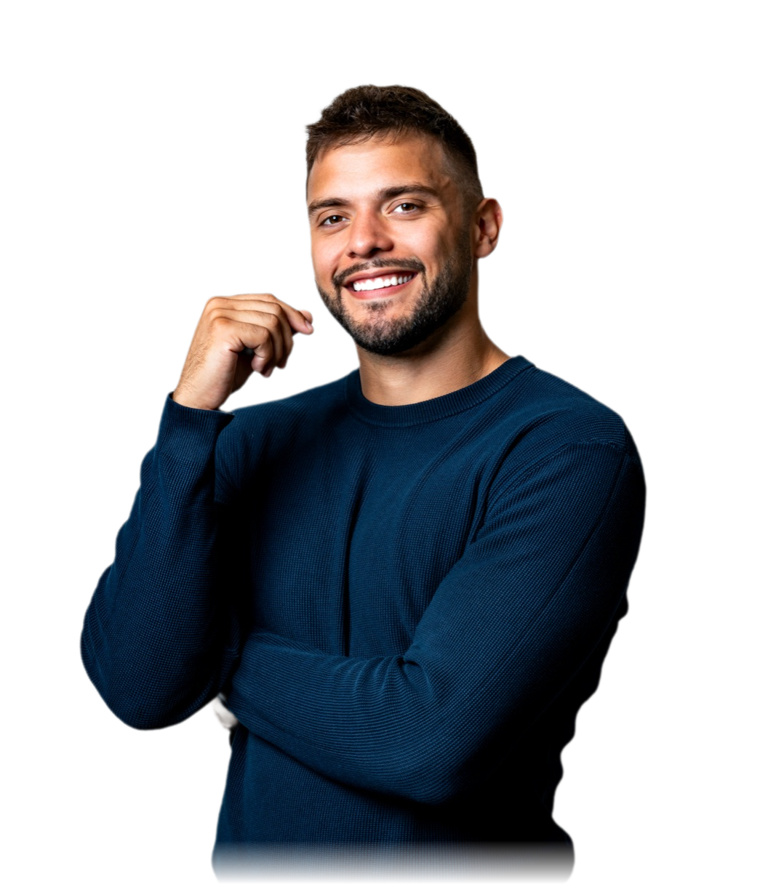
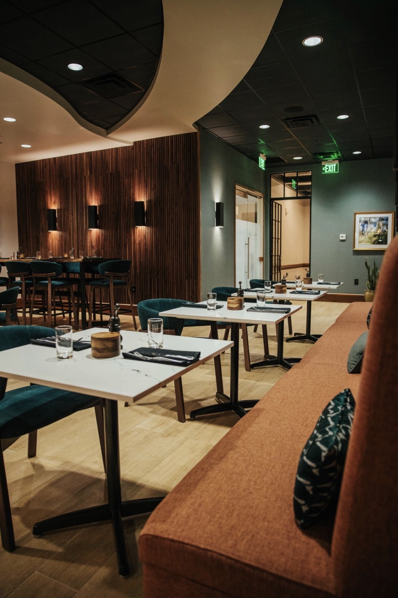
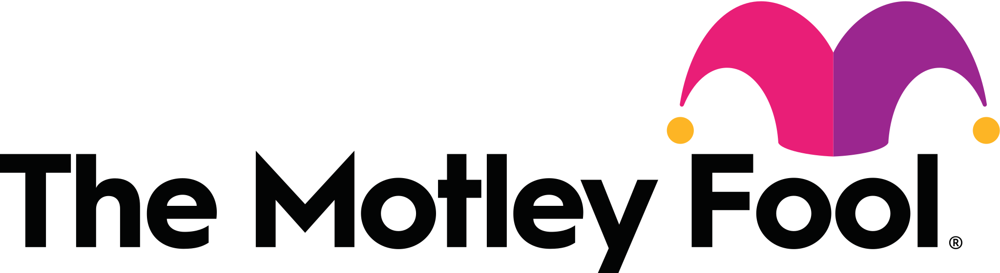
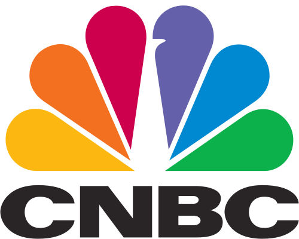
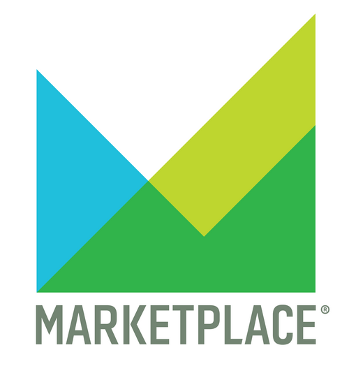
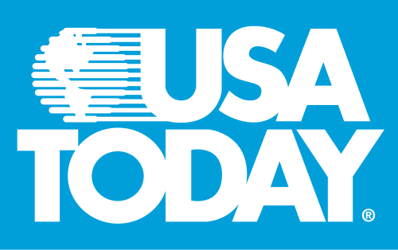
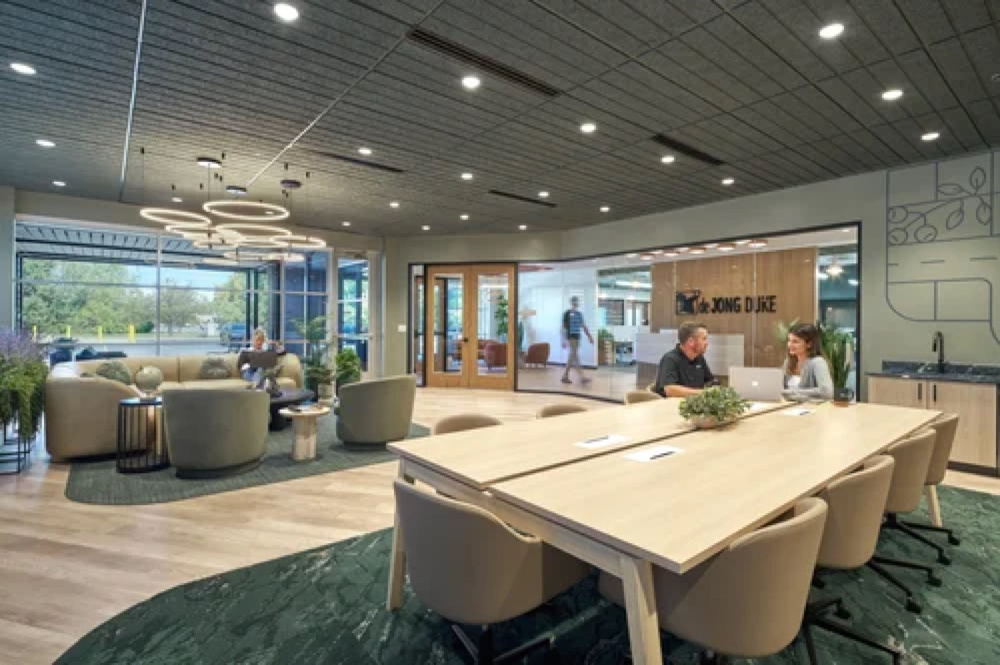
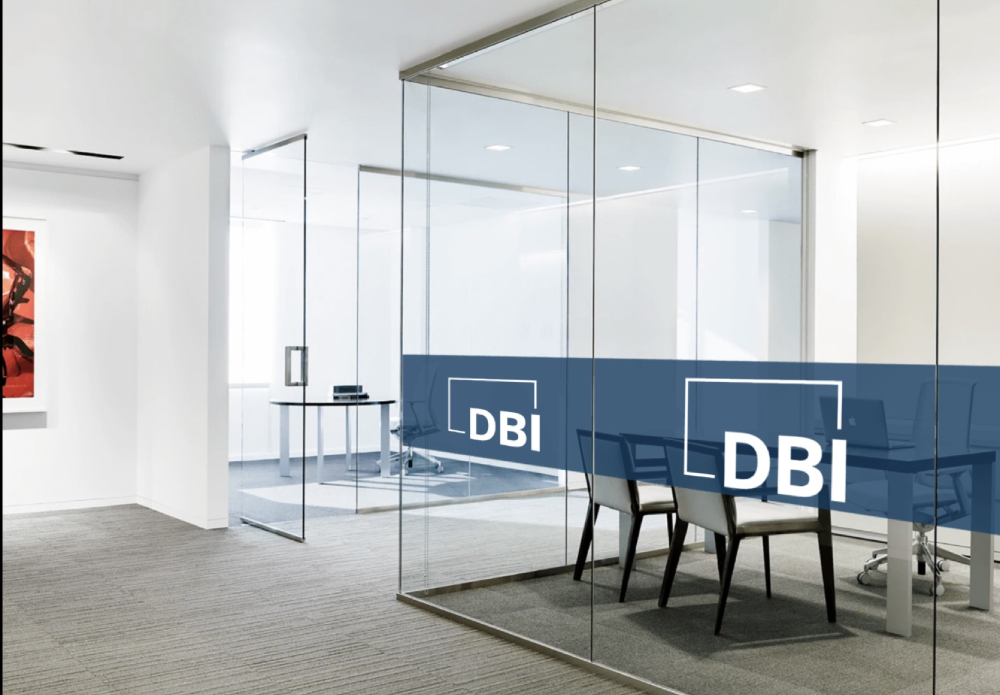
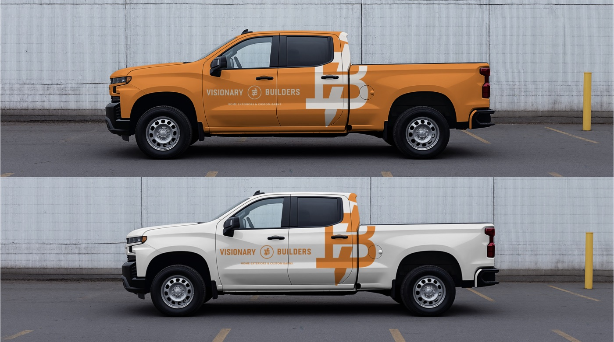

Portfolio Zac Owen
I find what makes things special, and I tell people about it.

The Work
Selected work.


As featured in





Not everything fits on one page. Ask me about the trust building comms for a founder stepping away from the company that still carried his name, the nonprofit studio that helped deaf dancers feel music, my brother's coffee company named after our mom, and a few personal brands along the way.